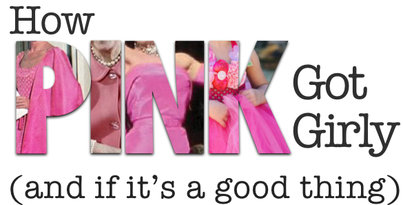
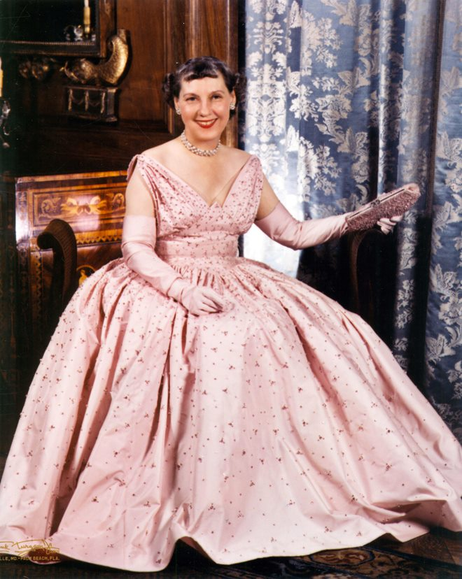

Apr 5, 2016
Tweet
Not too long ago, pink was the color for boys.

Mamie Eisenhower on the eve of her husband's inauguration in January 1953.
Mamie Eisenhower chose to be photographed in pink for this magazine interview.
Top